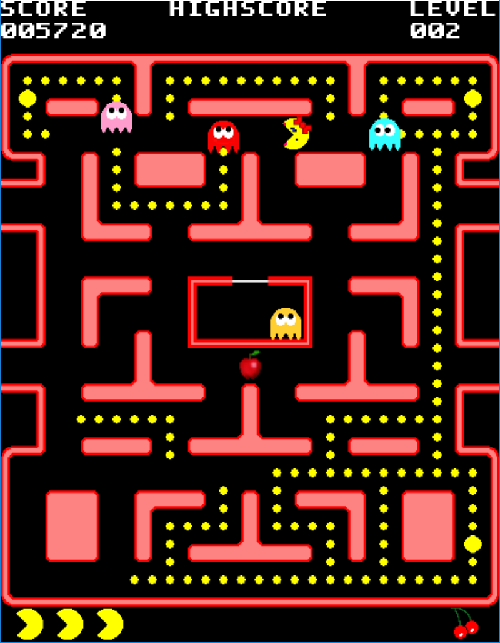

... Pacman Code ...
... Pacman Code ...
Welcome to my website!
This website is all about how to program a Pacman clone using the Python programming language. I may add more languages in the future, but for now I'm only doing it in Python. I'm doing this website mainly for myself since I would like to get all of my thoughts better organized and learn website development in the process. If anybody else gets any use out of this, then that is a bonus. This is not an official Pacman website and I am in no way affiliated with whoever owns Pacman. I'm just a fan of the game and wanted to learn how to make my own clone. I consider myself to be a fairly decent programmer, although my background is in physics. Check out the About Me page for more info if you're interested. I am not trying to make an exact duplicate of the game, therefore, I may add content that wasn't in the original games. That's part of the fun of making clones, you get to add your own rules. As of this writing it is sort of a combination of Pacman and Ms. Pacman. This site also is not a tutorial on how to write in Python or any other language in general. If you are not familiar with Python, then I would get familiar with it first. I'm assuming you know how to write your own classes and functions for a start. There are plenty of good books out there. If you are new to programming in general, then this material will be very difficult to understand. If you are writing a Pacman clone or a Pacman-like game, but not in Python, then you can still make use of this site as I try to be as language-neutral as possible when explaining the logic behind the game. If you have any questions about the content of this website, then please drop me an email and I'll get back to you as soon as I can. In the meantime, take a look around and I hope you enjoy this site for what it is.
Coding Example
Throughout the site you'll see sections such as this one with text on the left and code on the right. The text on the left will explain what the code on the right is doing. This side is like the pseudo-code and the right side is like the actual code. If you're writing this in another language other than Python, then hopefully you can figure out what you need to write just from this side. It's like having comments in your code, but more detailed.
This side shows the actual code that needs to be included in your program.
import pygame
from numpy import *
class Pacman(object):
Updates
Another major update. I've finished with Phase I which goes all the way to section 18. I will probably split this phase into phases I and II though. Phase III will be all about adding graphics and flashy stuff. But the game is playable and it is Pacman.
I doubt anybody has seen the site yet. I kind of hope nobody has seen it yet as it kind of sucks still. I put in sections 6-10. Well, the content in section 10 is still non-existant, but it's there at least. I imagine in the end there will be close to 30 sections. I'm dedicated to making this site awesome though.
My website went live today. I figured that I have enough content on here that I could sign up for a year of hosting. Better do it now before someone else takes the name. Not that it's in danger of being snatched up by someone. Pacman is a timeless game and I think more and more people will be interested in making their own clones. Hopefully they'll checkout this site at some point to learn how to do that. So, today is the site's birthday.
I'm just testing out the links on the right. I'm new to HTML and CSS so I just like to test things out.
The first time writing a website. Not really, but the first time I'm giving it a real go.
Update history
This is an end block.